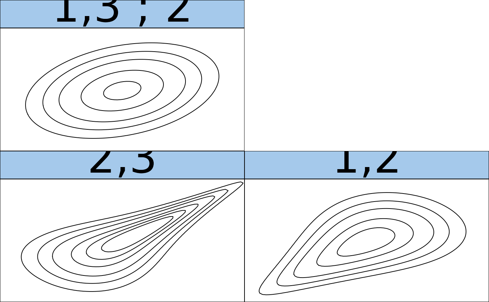

RVineMatrix objects.R/contour.RVineMatrix.R, R/plot.RVineMatrix.R
plot.RVineMatrix.RdThere are two plotting generics for RVineMatrix objects.
plot.RVineMatrix plots one or all trees of a given R-vine copula
model. Edges can be labeled with information about the corresponding
pair-copula. contour.RVineMatrix produces a matrix of contour plots
(using plot.BiCop()).
RVineMatrix object.
"ALL" or integer vector; specifies which trees are
plotted.
numeric vector of length 2; sets xlim and ylim
for the contours
numeric; expansion factor for font of the numbers.
a data matrix for creating kernel density contours of each pair.
Arguments passed to
network::plot.network() or
plot.BiCop() respectively.
integer; specifies how to make use of variable names: 0 = variable names are ignored, 1 = variable names are
used to annotate vertices, 2 = uses numbers in plot and adds a
legend for variable names.
character; either a vector of edge labels or one of the
following: "family" = pair-copula family abbreviation (see
BiCopName()), "par" =
pair-copula parameters, "tau" = pair-copula Kendall's tau (by
conversion of parameters) "family-par" = pair-copula family and
parameters "family-tau" = pair-copula family and Kendall's tau.
the x argument for
graphics::legend().
logical; if TRUE, the user is asked to adjust the positioning of vertices with his mouse.
If you want the contour boxes to be perfect squares, the plot height should
be 1.25/length(tree)*(d - min(tree)) times the plot width.
## build vine model
strucmat <- matrix(c(3, 1, 2, 0, 2, 1, 0, 0, 1), 3, 3)
fammat <- matrix(c(0, 1, 6, 0, 0, 3, 0, 0, 0), 3, 3)
parmat <- matrix(c(0, 0.3, 3, 0, 0, 1, 0, 0, 0), 3, 3)
par2mat <- matrix(c(0, 0, 0, 0, 0, 0, 0, 0, 0), 3, 3)
RVM <- RVineMatrix(strucmat, fammat, parmat, par2mat)
# plot trees
if (FALSE) plot(RVM)
# show contour plots
contour(RVM)
